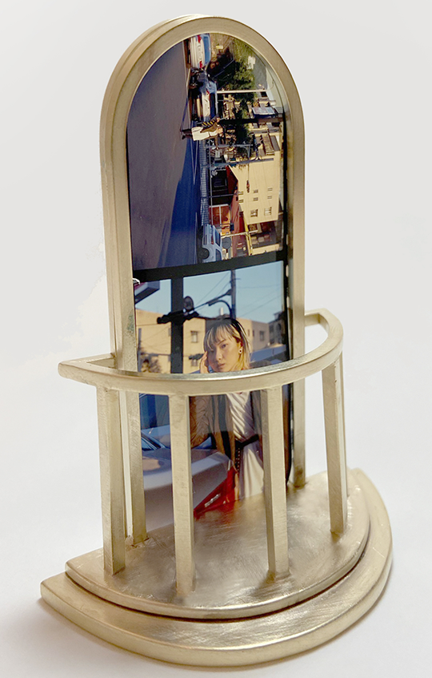

作品介紹


記憶系列理念
紀錄著記憶中親愛的人的樣貌，將個人經驗和情感結合，觀察生活中瑣碎的片段，構劃對於未來世界的想像，接著從工藝創作實踐，完成系列作品，以生活上微不足道的畫面中捕捉破碎的靈魂轉為創作。



紀錄著記憶中親愛的人的樣貌，將個人經驗和情感結合，觀察生活中瑣碎的片段，構劃對於未來世界的想像，接著從工藝創作實踐，完成系列作品，以生活上微不足道的畫面中捕捉破碎的靈魂轉為創作。
設計師平時喜歡色彩鮮豔得花花草草，對於植物也些許的研究，想讓這些花草融入生活當中，打造一個自己配色出來的花園。


國立清華大學碩士，
金工專業藝術空間客座講師